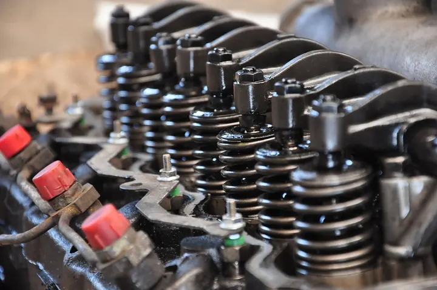
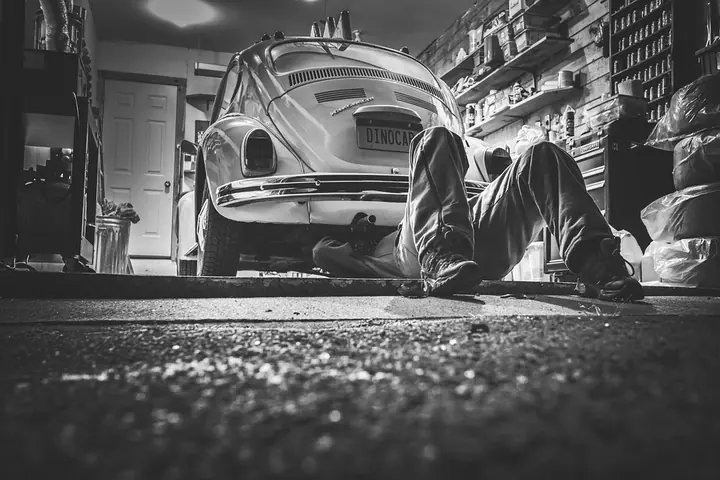

Nella foto: le parti di un motore, in primo piano. Qui un'auto di esempio sale sul ponte, come in officina.
Foto caricata dal titolare
02 / 04
Sotto ilcofano
Si apre il cofano: è un'animazione di esempio. Nella foto: molle e valvole di una testata, in primo piano.

Foto caricata dal titolare
03 / 04
In biancoe nero
Un'auto d'epoca in officina, in bianco e nero, vista dal basso.

Foto caricata dal titolare
04 / 04
Pronta
4,8 su 5 su Google, 54 recensioni.
Foto caricata dal titolare
«Quando la professionalità è la competenza incontrano una persona, questo è Alessandro di Sauro. Top del settore consigliatissimo»Adriano M. · recensione Google, riportata senza modifiche
4,8 su 5 · 54 recensioni su Google. Qui sotto alcune, riportate senza modifiche (i nomi sono abbreviati).
★★★★★
Confermo tutte le recensioni positive che hanno scritto le persone che, prima di Me, si sono rivolte all'officina Di Sauro. Se siete appassionati d'auto e state andando da loro per una messa a punto o un'elaborazione, credo proprio che vi state recando nel posto giusto. Io gli ho portato la mia 147 1.9 JTDm e Alessandro, dopo una rapida occhiata sotto al cofano e dopo averla sentita qualche secondo in moto, ha capito subito quello che doveva fargli. Dopo ha eseguito una mappa perfetta (ora l'erogazione è brillante e corposa e l'auto tira in modo lineare senza dare strappi) Ho percorso un bel po' di Km per venire da lui ma devo dire che ne è valsa proprio la pena. Ricordate bene: quando si tratta di elaborare un'auto bisogna sempre affidarsi a persone serie e professionali che conoscono bene il loro lavoro, altrimenti si buttano via soldi e si rischia pure di ritrovarsi con un bel danno al motore. Qui ho trovato esperienza, disponibilità e passione, oltre alla correttezza e all'umiltà di Alessandro. A fine lavoro sono andato via soddisfatto ed ho speso una cifra giusta ed onesta.
★★★★★
Quando la professionalità è la competenza incontrano una persona, questo è Alessandro di Sauro. Top del settore consigliatissimo
★★★★★
Alessandro ottima persona gentile,disponibile e esperto nel settore. mi ha risolto un problema che nemmeno la Volkswagen ha risolto